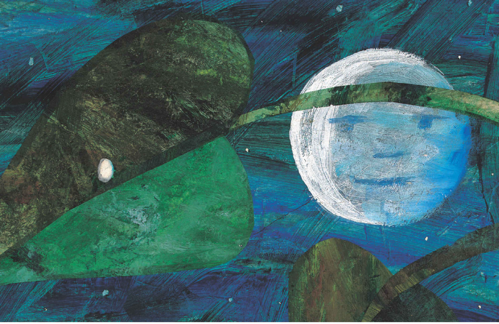
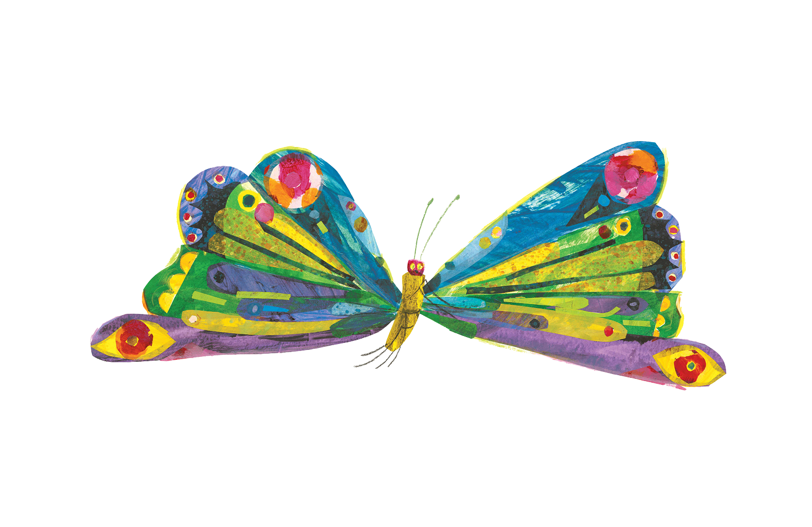
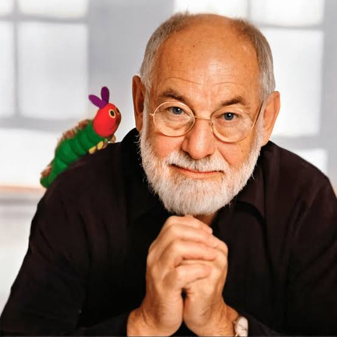

.png)




The next day was Sunday again. The caterpillar ate through one nice green leaf, and after that he felt much better.






About the Author: Eric Carle
Eric Carle was a beloved American author, illustrator, and visual storyteller best known for his timeless children's book The Very Hungry Caterpillar. Born on June 25, 1929, in Syracuse, New York, Carle moved to Germany with his family at the age of six. There, he spent most of his youth and later attended art school at the Akademie der bildenden Künste in Stuttgart. His early life was shaped by the experiences of World War II, but also by an early love of nature, instilled by long walks with his father, who taught him to observe the beauty of tiny creatures and growing things—details that would later become central to his books.
Carle returned to the United States as a young man and began working as a graphic designer in the advertising world. However, his true calling came when author Bill Martin Jr. noticed Carle’s distinct illustration style and invited him to collaborate on the book Brown Bear, Brown Bear, What Do You See? (1967). The success of that project launched Carle’s career in children’s literature. Just two years later, Carle wrote and illustrated his most iconic book: The Very Hungry Caterpillar.
First published in 1969, The Very Hungry Caterpillar has sold over 55 million copies worldwide and been translated into more than 70 languages. It tells the story of a small caterpillar who eats his way through a variety of foods before transforming into a beautiful butterfly. With its simple text, interactive die-cut pages, and bold, colorful illustrations, the book quickly became a classic. It also introduced many children to basic concepts like counting, days of the week, and the life cycle of a butterfly—all wrapped in a gentle narrative of transformation and growth.
Carle’s signature artistic style—brightly colored collages made from hand-painted tissue paper—made his illustrations instantly recognizable. His work was often inspired by nature and guided by a deep respect for children. He believed that picture books should not only educate but also comfort and inspire. “With my books,” he once said, “I try to bridge the gap between home and school, between the child’s attention span and the curious mind.”
Over the course of his career, Eric Carle wrote and illustrated more than 70 books, including The Very Busy Spider, The Grouchy Ladybug, and Papa, Please Get the Moon for Me. In 2002, he and his late wife Barbara founded The Eric Carle Museum of Picture Book Art in Amherst, Massachusetts—a space dedicated to celebrating the art of the picture book and encouraging creativity in children.
Eric Carle passed away on May 23, 2021, at the age of 91. His books continue to delight and educate children around the world, and his legacy lives on through the joy of storytelling, art, and wonder he brought into so many young lives.
Eric Carle was a beloved American author, illustrator, and visual storyteller best known for his timeless children's book The Very Hungry Caterpillar. Born on June 25, 1929, in Syracuse, New York, Carle moved to Germany with his family at the age of six. There, he spent most of his youth and later attended art school at the Akademie der bildenden Künste in Stuttgart. His early life was shaped by the experiences of World War II, but also by an early love of nature, instilled by long walks with his father, who taught him to observe the beauty of tiny creatures and growing things—details that would later become central to his books.
Carle returned to the United States as a young man and began working as a graphic designer in the advertising world. However, his true calling came when author Bill Martin Jr. noticed Carle’s distinct illustration style and invited him to collaborate on the book Brown Bear, Brown Bear, What Do You See? (1967). The success of that project launched Carle’s career in children’s literature. Just two years later, Carle wrote and illustrated his most iconic book: The Very Hungry Caterpillar.
First published in 1969, The Very Hungry Caterpillar has sold over 55 million copies worldwide and been translated into more than 70 languages. It tells the story of a small caterpillar who eats his way through a variety of foods before transforming into a beautiful butterfly. With its simple text, interactive die-cut pages, and bold, colorful illustrations, the book quickly became a classic. It also introduced many children to basic concepts like counting, days of the week, and the life cycle of a butterfly—all wrapped in a gentle narrative of transformation and growth.
Carle’s signature artistic style—brightly colored collages made from hand-painted tissue paper—made his illustrations instantly recognizable. His work was often inspired by nature and guided by a deep respect for children. He believed that picture books should not only educate but also comfort and inspire. “With my books,” he once said, “I try to bridge the gap between home and school, between the child’s attention span and the curious mind.”
Over the course of his career, Eric Carle wrote and illustrated more than 70 books, including The Very Busy Spider, The Grouchy Ladybug, and Papa, Please Get the Moon for Me. In 2002, he and his late wife Barbara founded The Eric Carle Museum of Picture Book Art in Amherst, Massachusetts—a space dedicated to celebrating the art of the picture book and encouraging creativity in children.
Eric Carle passed away on May 23, 2021, at the age of 91. His books continue to delight and educate children around the world, and his legacy lives on through the joy of storytelling, art, and wonder he brought into so many young lives.